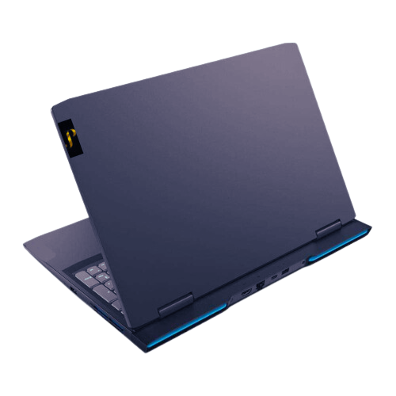

- • Pantalla de alta resolución y calidad con tecnología por ejemplo Pantalla Retina en MacBooks o pantallas táctiles de alta definición en modelos Windows
- • Procesadores de última generación con múltiples núcleos y alto rendimiento, como por ejemplo los procesadores Intel Core i9 o los AMD Ryzen 9.
- • Memoria RAM de gran capacidad para una multitarea fluida y un rendimiento rápido en aplicaciones exigentes.
- • Almacenamiento SSD ultrarrápido con capacidades amplias para almacenar grandes cantidades de datos y programas.
- • Diseño premium y materiales de alta calidad, como aluminio o fibra de carbono, con construcción robusta y elegante.
- • Conectividad avanzada, incluyendo puestos Thunderbolt, USB-C, WiFi 6, Bluetooth 5,0, y tarjetas de red Ethernet de alta velocidad
- • Batería de larga duración con tecnología de carga rápida y gestión de energía eficiente